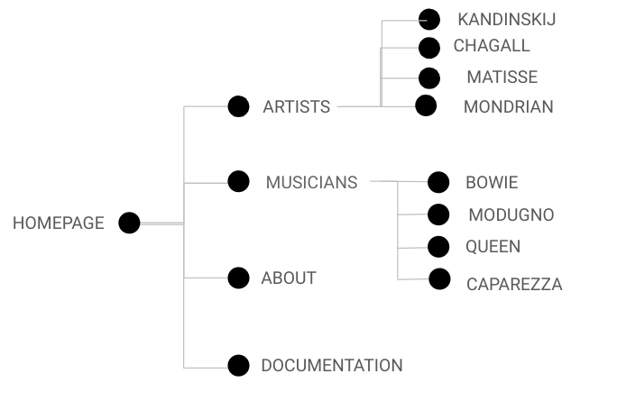

This website was created to spread knowledge concerning the theme of the meeting point between art and music. More generally, the user is supposed to understand that there are links between different art forms and they are not worlds apart. The english language was employed to expand the user target and make the information more accessible.
The aim of this website is the organisation of the knowledge in a simple, intuitive, but effective way to engage a great range of users and make them interested in such a fascinating subject. The website is also promoted on Instagram to try to involve even the youngest users.
I created this website to involve a quite unexperienced user who looks for simple and basic information concerning the theme. The way the content is organised might intrigue the user and make him more interested in increasing his knowledge. Thanks to the English language, the user can be international.
Once I found which was my purpose, I looked for similar websites
to understand who my competitors are. I decided to choose some of them and rate them using a range from 1 to
5.
1. "Finestre sull'arte" might be one of my website's competitors.
It is an art magazine online that has a lot of interesting information about art and museums,
it collects also reviews and opinions. They are very professional and the content is detailed.
However, it is confusing how those information are organised: I think it is a little messy and
the user might be distracted by the numerous graphic elements as images, colors and so on.
Also, the information is available only in italian, which is restrictive for the audience.
3/5
2. "Go with Yamo" is another website about art that I decided to put in my competitors list.
It is an art blog that includes also podcasts. I appreciate the graphics because it is eye-catching. Despite
it,
I think a simplier graphics is more effective for such a theme: it is good to experiment with different and
modern graphics,
but minimal web pages can sometimes be more catchy. I noticed that in the homepage they made the wrong
choice in
selecting white for the subtitle because, as a result, the subtitle it is nearly incomprehensible.
3/5

The website has a minimal graphics that is made of a few colors, a white simple background and
some images of the artworks I chose to analyse.
First of all, I created the logo (using the app Canva) which is made of two merging patches that represent
the whole topic of the website: the meeting point of two art forms. Once I chose the colors of the logo, I
decided
that those ones would characterize the web pages. Using Adobe Colors, I selected three shades contained in
the logo: #FFDCE6,
#FFC787 and #FECAC3.
The images in the homepage are chosen trying to match the palette of colors. On the other hand, the pages dedicated
to the artists have
images that do not match those colors because I chose to focus on the theme and include some artworks worthy
of attention even if they have different color shades.
Every page has a vertical line that connects the logo to the content of the page. In the homepage, that line
continues until the end
and it fades to symbolise the fading limit between art and music.
In terms of typography, I picked
1. Fredericka the Great: a serif font that reminds a hand-written graphy using a grey pencil, which I
think fits
perfectly the theme, indeed I used it for the titles in every page.
2. Cormorant Infant: another serif font I used for all the rest increasing the font-weight for the
headings.
I adopted two serif fonts (and I did not combine a serif and sans serif) because, in my point of view, a
flat white background
allows to use a little more eloquent graphic elements.
Tools I used:
- HTML and CSS languages
- Visual Studio Code for the code writing
- Bootstrap for the navbar, the colums, the vertical line and other elements
- Fontawesome for the icons in the homepage and footer
- Google Fonts to select the fonts
- Canva to design logo and a collage in the homepage
- Wireframe Pro to design the wireframes
- Instagram to promote the website
- Adobe Colors for the selection of the shades of color
- Github to publish the code
- Google Analytics to check the views
The strategy I adopted to stand out from the competitors is the focus on a simple and effective graphics putting some basic information that a non-expert user could find interesting and, maybe, become passionate.
The goal I try to reach with the realization of this project is to arouse the curiosity and the interest of the users looking for a simple knowledge concerning this theme.
I promoted the website by creating an Instagram page that was shared in my main Instagram account, by
Whatsapp
messages and taking advantage of word of mouth. I also shared the link to the website using the same
devices.
My goal is to reach 50 views on the website and 50 followers on the Instagram page.
As a website made by exercise, there are elements that could be added to reach the state of a real art magazine. For example, there could be a box for the reviews, the information should always be updated to not lose the loyal users' attention. Lastly, there could also be a box for paid subscriptions.